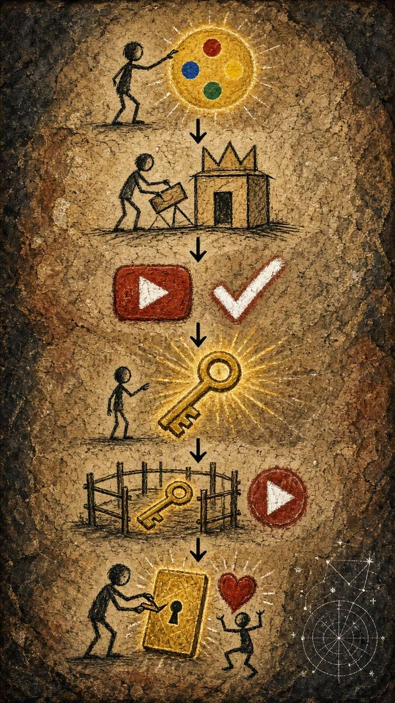
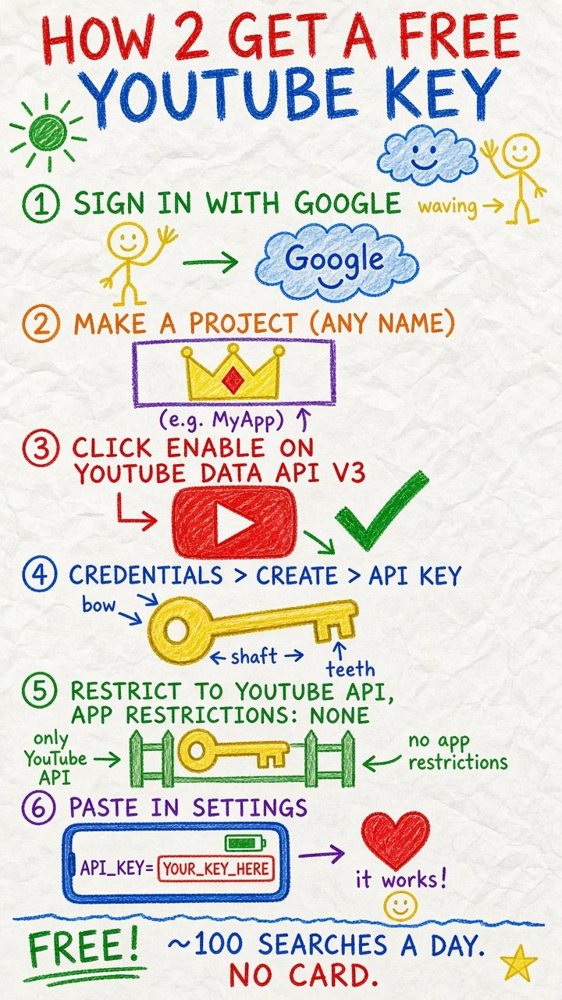

Free by default: searches the place name + keywords (and “footage”), newest first. Leave “Since” blank for the last 48 hours. Map/radius search needs an optional Google API key.
No key needed. The app uses free public Invidious/Piped mirrors. A Google API key is only an optional backup (and unlocks map-radius Local eyes + max-subs filter).
How to get a free API key


- Open the link and sign in with any Google account.
- Create a project if asked (any name).
- Click Enable on YouTube Data API v3.
- Go to APIs & Services > Credentials > Create credentials > API key.
- Edit the key: API restrictions = Restrict key > YouTube Data API v3; Application restrictions = None. Save.
- Copy the key and paste it into this app's Settings.
Free · about 100 searches/day · no card needed.
Stored only on this device (localStorage). Never committed to the repo.